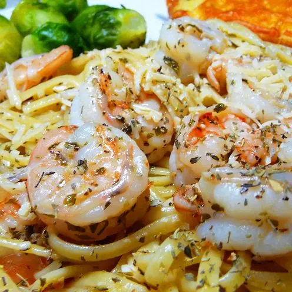

Garlic Shrimp Linguine
- Total time30 mins
- Serves8
- Ingredients8
- Steps4

Ingredients
- 1 pound uncooked linguine
- 1 tablespoon butter
- 3 tablespoons white wine
- 3 cloves garlic, minced
- 2 teaspoons grated Parmesan cheese, plus more for serving
- 1 teaspoon chopped fresh parsley, plus more for garnish
- salt and pepper to taste
- 1 pound medium shrimp, peeled and deveined
Directions
- Bring a large pot of lightly salted water to a boil. Cook linguine at a boil until tender yet firm to the bite, about 11 minutes. Drain.
- Melt butter in a medium saucepan over medium-low heat. Add wine, garlic, Parmesan cheese, and parsley. Season with salt and pepper. Simmer, stirring frequently, over low heat for 3 to 5 minutes.
- Increase heat to medium-high and add shrimp to the saucepan; cook until shrimp begins to turn pink, 3 to 4 minutes. Do not overcook.
- Divide pasta into 8 bowls. Spoon shrimp with sauce on top. Garnish with Parmesan cheese and parsley.
Recipe credit: allrecipes.com